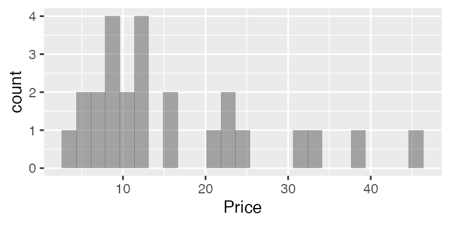
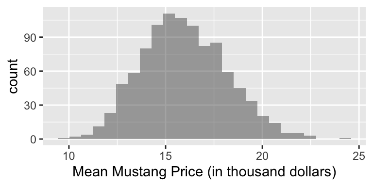
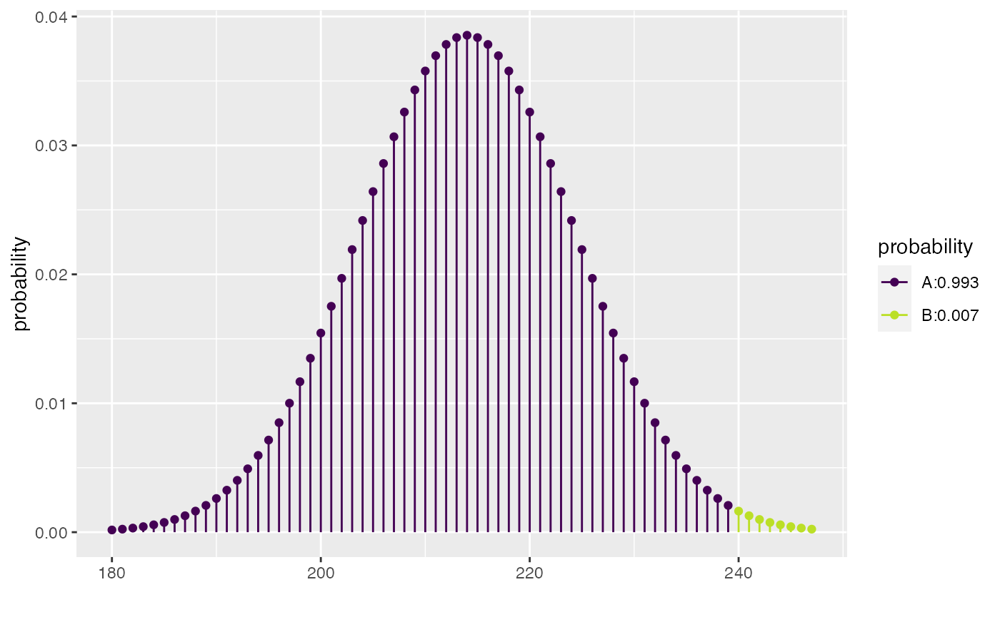
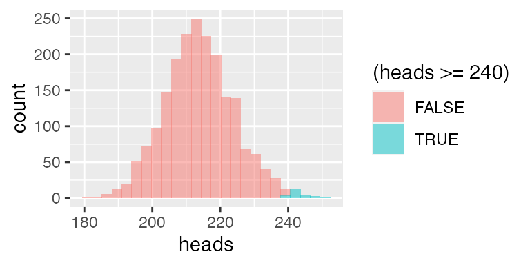
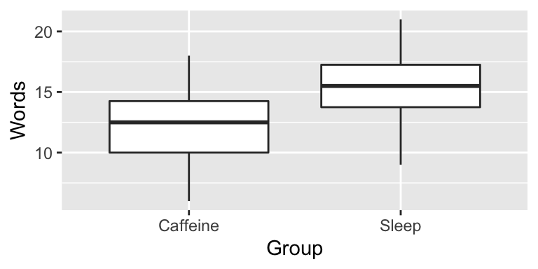
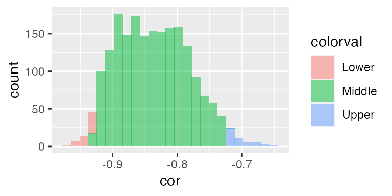
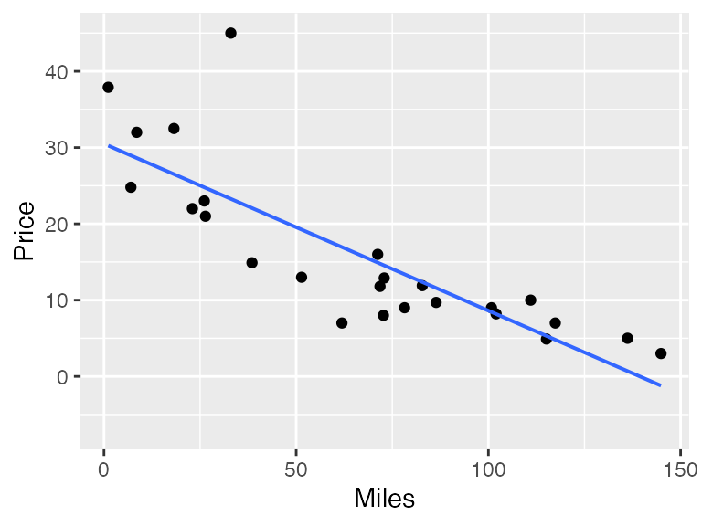
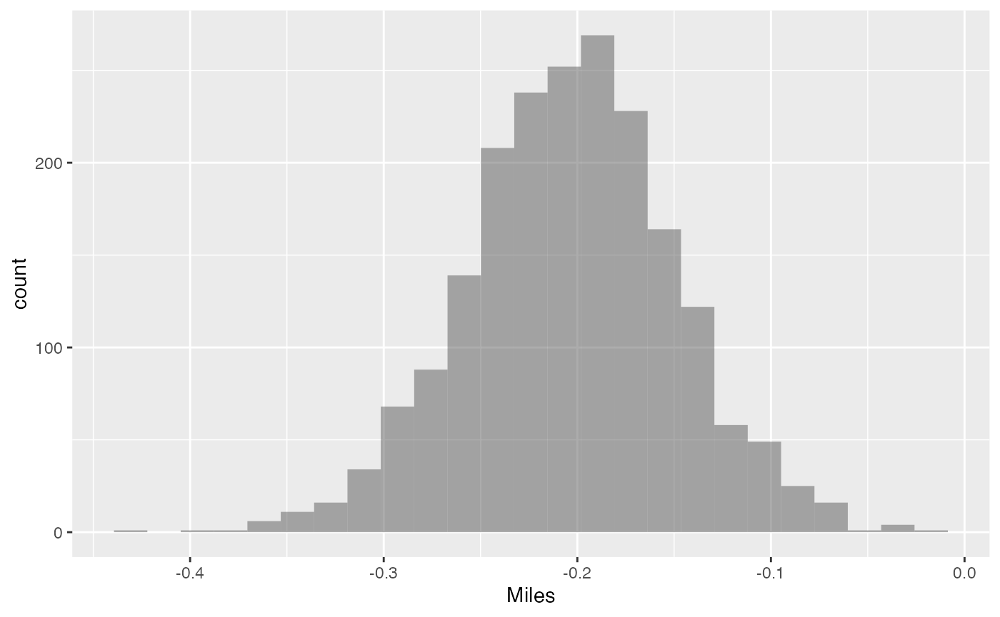
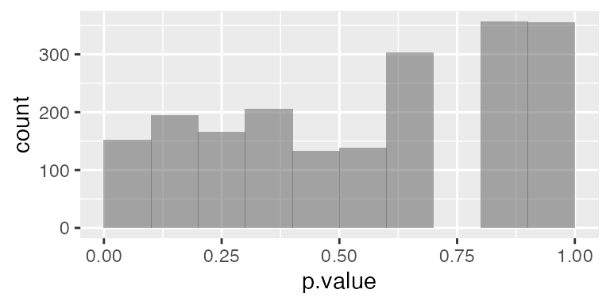
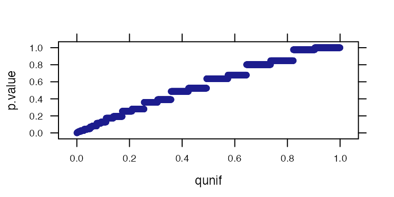

Simulation-based inference with mosaic
Daniel Kaplan, Nicholas J. Horton, and Randall Pruim
Source:vignettes/Resampling.Rmd
Resampling.RmdIntroduction
The mosaic package is intended to support teaching statistics and modeling (as well as calculus) in a way that embraces the possibilities offered by modern computational techniques. Our goal is to make effective computation accessible to university-level students at an introductory level. With the broad availability of inexpensive, fast computing and powerful, free software such as R the rate-limiting factor in accessibility is intellectual: providing a notation in which ideas can be expressed and understood clearly.
This document describes how to use the mosaic package to carry out randomization-based statistical inference. The mosaic package supports an approach that is intended to be easy for students to learn and to generalize. To this end, we adopt the following tenets:
- Students should be able to carry out useful statistics with only a very few lines of commands.
- Basic commands should relate to statistical operations rather than programming operations. We seek to avoid programming overhead such as loops, counters, and accumulators.
- Black boxes should perform a conceptually straightforward operations. Their output should be verifiable.
- Statements should demonstrate the logical structure of statistics, rather than merely naming high-level procedures.
- There should be a simple path to generalizing from simple descriptions — means, counts, proportions — to more complicated ones such as generalized linear models.
The mosaic operations allow students to implement each of the operations in what George Cobb calls the ``3 Rs’’ of statistical inference: Randomization, Replication, and Rejection (Cobb, 2007). By putting the 3 Rs together in various ways, students learn to generalize and internalize the logic of inference, rather than just to blindly follow formulaic methods. Terry Speed (2011) notes the changing role of simulation in statistics.
[Simulation used to be] something that people did when they can’t do the math… It now seems that we are heading into an era when all statistical analysis can be done by simulation.
Arguably, the most important operation in statistics is sampling: ideally, selecting a random subset from a population. Regrettably, sampling takes work and time, so instructors tend to de-emphasize the actual practice of sampling in favor of theoretical descriptions. What’s more, the algebraic notation in which much of conventional textbook statistics is written does not offer an obvious notation for sampling. With the computer, however, these efficiency and notation obstacles can be overcome. Sampling can be placed in its rightfully central place among the statistical concepts in our courses.
Randomization-based inference using permutation testing and bootstrapping are an increasingly important set of techniques for introductory statistics and beyond. To help educators usefully compare different software approaches, Five members of the Lock family posed a series of problems at USCOTS 2011 (United States Conference on Teaching Statistics), as described at https://www.causeweb.org/cause/uscots/uscots11/breakout, relating to bootstrapping and permutation tests.
Bootstrapping and permutation testing are powerful and elegant approaches to estimation and testing that can be implemented even in many situations where asymptotic results are difficult to find or otherwise unsatisfactory (Efron and Tibshirani, 1993; Hesterberg et al 2005). Bootstrapping involves sampling with replacement from a population, repeatedly calculating a sample statistic of interest to empirically construct the sampling distribution. Permutation testing for a two group comparison is done by permuting the labels for the grouping variable, then calculating the sample statistic (e.g. difference between two groups using these new labels) to empirically construct the null distribution.
We will illustrate the use of the mosaic package using the Lock randomization problems. Then we will move beyond the simple settings of the Lock problems to show how the mosaic operations makes it straightforward to generalize the logic of randomization to more complicated models.
Background and setup
R and RStudio
R is an open-source statistical environment that has been used at a number of institutions to teach introductory statistics. Among other advantages, R makes it easy to demonstrate the concepts of statistical inference through randomization while providing a sensible path for beginners to progress to advanced and professional statistics. RStudio (https://rstudio.com/) is an open-source integrated development environment for R which facilitates use of the system.
Setup
The mosaic package can be installed using the standard features of the system (this needs only be done once).
install.packages("mosaic")Once installed, the package must be loaded so that it is available (this must be done within each R session). In addition to loading the mosaic package, the following commands also set the number of digits to display by default.1
Commands such as the above can be provided for students in a set-up file to be executed automatically each time an R session is started.
The mosaic package works within R, so any of the data facilities within R can be used to provide data sets to students. In particular, R functions such as read.csv() and read.table() support accessing data files via a website URL, avoiding the need to download data files to individual student machines.
Here, we load one of the Lock data sets:
The Lock problems
The Lock problems are a series of short problems in statistical inference provided in 2011 by Robin Lock et al. to enable instructors to compare randomization software usability.
Lock problem 1. Bootstrapping a mean (used Mustangs)
A student collected data on the selling prices for a sample of used Mustang cars being offered for sale at an internet website. The price (in $1,000’s), age (in years) and miles driven (in 1,000’s) for the 25 cars in the sample are given in the [file MustangPrice.csv].
Use these data to construct a 90% confidence interval for the mean price (in $1,000’s) of used Mustangs.
Students should learn to examine data before undertaking formal inference. Any of the standard R tools can be used for this. We advocate the use of ggformula-style graphics functions for two reasons:
- They use a syntax that is consistent with the syntax used in mosaic.
- They extend naturally to more complicated settings.
gf_histogram( ~ Price, data = Mustangs)
The basic ggformula syntax here — operator, “formula” involving ~, and the use of data = to specify the relevant data set — will be used throughout mosaic. For example, here is the sample mean
mean( ~ Price, data = Mustangs)
#> [1] 16Those familiar with R may wonder why the statement has not been written as
mean(Mustangs$Price)You can, of course, carry out exactly the same calculation this way. By using
mean( ~ Price, data = Mustangs)we are making graphical and numerical summaries fit into a common template and anticipating the next steps, including the introduction of additional operations such as randomization and modeling.
Resampling, also known as random selection with replacement, is an important operation in randomization. The resample() function performs this. It can be illustrated in a very basic way on a small set of numbers:
simple = c(1, 2, 3, 4, 5)
resample(simple)
#> [1] 2 2 3 3 5
resample(simple)
#> [1] 5 2 1 1 4
resample(simple)
#> [1] 2 1 2 4 3When applied to a dataframe, resample() selects random rows. It’s easy to demonstrate this with a statement such as:
resample(Mustangs)#> Age Miles Price orig.id
#> 13 8 100.8 9.0 13
#> 3 9 82.8 11.9 3
#> 2 7 33.0 45.0 2
#> 24 12 72.9 12.9 24
#> 2.1 7 33.0 45.0 2
#> 24.1 12 72.9 12.9 24
#> ... and so onBy reference to the case numbers in the left column, you can see that case 19 has been selected twice.
One resampling trial of the mean can be carried out with
Even though a single trial is of little use, it’s a nice idea to have students do the calculation to show that they are (usually) getting a different results with each resample.
Another trial can be carried out by repeating the command:
Let’s generate five more, with a single command:
do(5) * mean( ~ Price, data = resample(Mustangs))
#> mean
#> 1 11.8
#> 2 14.0
#> 3 13.8
#> 4 15.6
#> 5 20.2Now conduct 2000 resampling trials2, saving the results in an object called Mustangs.Price.boot:3
Plotting this resampling distribution is straightforward, e.g.:
gf_histogram( ~ mean, data = mustangs_price_boot,
xlab="Mean Mustang Price (in thousand dollars)")
The simplest way to translate this distribution into a confidence interval is to apply the operator for that purpose:
confint(mustangs_price_boot, level = 0.90, method = "quantile")
#> name lower upper level method estimate
#> 1 mean 12.5 19.7 0.9 percentile 16
confint(mustangs_price_boot, level = 0.90, method = "stderr")
#> name lower upper level method estimate margin.of.error df
#> 1 mean 12.2 19.6 0.9 stderr 16 3.68 24The confint() function is a black box. In introducing it, an instructor might well want to show the calculations behind the confidence interval in some detail using general-purpose operations. confint() implements two basic approaches, one based on quantiles of the distribution and the other using normal theory.
- Calculation of the 90% confidence interval using quantiles
qdata( ~ mean, c(.05, .95), data = mustangs_price_boot)
#> 5% 95%
#> 12.5 19.7
# alternative
cdata(~ mean, 0.90, data = mustangs_price_boot)
#> lower upper central.p
#> 5% 12.5 19.7 0.9- Using normal theory and the standard error. First calculate the critical value \(t_\star\) for the appropriate degrees of freedom. Or use \(z_\star\), either for simplicity or to demonstrate how \(t_\star\) differs. In either case, the confidence level needs to be converted to the appropriate tail probability.
The resulting margin of error will be
tstar * sd( ~ mean, data = mustangs_price_boot)
#> [1] 3.68
zstar * sd( ~ mean, data = mustangs_price_boot)
#> [1] 3.53There’s little reason to repeat this set of commands every time one needs a confidence interval. That’s where confint() comes in, abstracting the operation, allowing the user to specify a level and a method ("quantile" or "stderr") and avoiding the need to convert the level into a tail probability. The extent to which one should repeat the detailed steps of the margin-of-error calculation is a decision the instructor can make depending on local circumstances and the instructor’s goals. R and mosaic supports both approaches.
Lock problem 2: Testing a proportion (NFL Overtimes)
The National Football League (NFL) uses an overtime period to determine a winner for games that are tied at the end of regulation time. The first team to score in the overtime wins the game. A coin flip is used to determine which team gets the ball first. Is there an advantage to winning the coin flip? Data from the 1974 through 2009 seasons show that the coin flip winner won 240 of the 428 games where a winner was determined in overtime. Treat these as a sample of NFL games to test whether there is sufficient evidence to show that the proportion of overtime games won by the coin flip winner is more than one half.
By and large, introductory students understand that, if first possession of the ball is unrelated to the game outcome, one would expect to see about half of the 428 games won by the team that won the coin flip. The question is whether the observed 240 wins is “about” half of the 428 games. Statistical inference compares the 240 to the \(428/2 = 214\) in the context of sampling variation.
Using the built-in binomial distribution operators.
Generate a simulation where each trial is a random sample of 428 games from a world in which the null hypothesis holds true and see what proportion of trials give a result as or more extreme as the observed 240.
The result indicates that it’s very unlikely, if the null were true, that the coin flip winner would win 240 or more times.
The exact result differs slightly from one simulation to the next, but that variation can be made small by making the number of trials larger.
In this case, it is tempting entirely to avoid the variation due to simulation by doing a deterministic probability calculation rather than the simulation. This exact reproducibility comes at a cost, though, the need to customize the cut-off point to reflect which tail of the distribution corresponds to “as or more extreme than 240.” On the right side, this means subtracting 1 from the observed number.
xpbinom(239, prob = 0.5, size = 428)
#> [1] 0.993
Of course, R can handle all of these little details and do the entire calculation for us if we use the binom.test() function.
binom.test(x = 240, n = 428)
#>
#>
#>
#> data: 240 out of 428
#> number of successes = 240, number of trials = 428, p-value =
#> 0.01
#> alternative hypothesis: true probability of success is not equal to 0.5
#> 95 percent confidence interval:
#> 0.512 0.608
#> sample estimates:
#> probability of success
#> 0.561Even if you want to use the deterministic probability calculation (using either pbinom() or binom.test()), you might want to illustrate the logic with the random-number generator.
Explicitly simulating a coin flip.
Recognizing that coin flips are a staple of statistics courses, the mosaic package offers a function that simulates random coin tosses without the need to refer to the binomial distribution. Here is one trial involving flipping 428 coins:
We’ll do 2000 trials, and count what fraction of the trials the coin toss winner (say, “heads”) wins 240 or more of the 428 attempts:
gf_histogram( ~ heads, fill = ~ (heads >= 240), data = nfl_null)
The observed pattern of 240 wins is not a likely outcome under the null hypothesis. The shading added through the groups = option helps to visually reinforce the result.
Lock problem 3: Permutation test of means from two groups (sleep and memory)
In an experiment on memory (Mednicj et al, 2008), students were given lists of 24 words to memorize. After hearing the words they were assigned at random to different groups. One group of 12 students took a nap for 1.5 hours while a second group of 12 students stayed awake and was given a caffeine pill. The results below display the number of words each participant was able to recall after the break. Test whether the data indicate a difference in mean number of words recalled between the two treatments.
data(Sleep) The Sleep group tends to have remembered somewhat more words on average:
mean(Words ~ Group, data = Sleep)
#> Caffeine Sleep
#> 12.2 15.2
obs <- diff(mean(Words ~ Group, data = Sleep))
obs
#> Sleep
#> 3
gf_boxplot(Words ~ Group, data = Sleep)
To implement the null hypothesis, scramble the Group with respect to the outcome, Words:
That’s just one trial. Let’s try again:
To get the distribution under the null hypothesis, we carry out many trials:
sleep_null <- do(2000) * diff(mean(Words ~ shuffle(Group), data = Sleep))
gf_histogram( ~ Sleep, fill = ~ (Sleep >= obs), data = sleep_null,
binwidth = 0.4,
xlab = "Distribution of difference in means under the null hypothesis")
The one-sided p-value for this test is the proportion of
trials which yielded a result as extreme or more extreme as the observed difference. We can calculate the one-sided p-value for this test by summing up the number of trials which yielded a result as extreme or more extreme as the observed difference. Here only 51 of the 2000 trials gave a result that large, so the p-value is equal to 0.025. We conclude that it’s unlikely that the two groups have the same mean word recall back in their respective populations.
Lock problem 4: Bootstrapping a correlation
The data on Mustang prices in Problem #1 also contains the number of miles each car had been driven (in thousands). Find a 95% confidence interval for the correlation between price and mileage.
We can follow essentially the same workflow to obtain a confidence interval for other statistics, including the correlation coefficient.4
cor(Price ~ Miles, data = Mustangs)
#> [1] -0.825
mustangs_cor_boot <- do(2000) * cor(Price ~ Miles, data = resample(Mustangs))
quantiles <- qdata( ~ cor, c(.025, .975), data = mustangs_cor_boot)
quantiles
#> 2.5% 97.5%
#> -0.928 -0.725
mustangs_hist <- mutate(mustangs_cor_boot,
colorval = cut(cor, c(-Inf, quantiles, Inf),
labels = c("Lower", "Middle", "Upper")))
gf_histogram( ~ cor, data = mustangs_hist, fill = ~ colorval, n = 50)
confint(mustangs_cor_boot)
#> name lower upper level method estimate
#> 1 cor -0.928 -0.725 0.95 percentile -0.825
Moving beyond means and proportions
The Lock problems refer to the descriptive statistics encountered in many introductory applied statistics courses: means, proportions, differences in means and proportions. There are advantages, however, in introducing such basic statistics in the context of a more general framework: linear models.
Usually, people think about linear models in the context of regression. For instance, using the Lock Mustang price dataset, there is presumably a relationship between the price of a car and its mileage. Here’s a graph:
gf_point(Price ~ Miles, data = Mustangs) %>%
gf_lm()
There’s a pretty clear relationship here, which in the Lock problems was quantified with the correlation coefficient.
In regression, one finds a straight-line functional relationship between the two variables. The built-in R lm() function does the calculations:
lm(Price ~ Miles, data = Mustangs)
#>
#> Call:
#> lm(formula = Price ~ Miles, data = Mustangs)
#>
#> Coefficients:
#> (Intercept) Miles
#> 30.495 -0.219The notation used is the same as used to produce a scatter plot. The result indicates that for every additional 1000 miles driven, the price of a car typically decreases by $219 dollars (or, given the units of the data, 0.2188 thousand dollars). In other words, the value of a Mustang goes down by about 22 cents per mile driven.
This number, 22 cents decrease per mile, can be thought of as a slope. It’s likely much more meaningful to students (and car buyers!) than the correlation coefficient of \(-0.82\). The ability to give a description in terms of predicted change is an advantage of using regression as a description rather than correlation. There are more such advantages to regression, which we will describe later. But for now, our emphasis is on the use of regression as a framework for the traditional sorts of calculations of means, proportions, and differences of means and proportions.
The mean price of the Mustangs is, calculated in the ordinary way:
mean( ~ Price, data = Mustangs)
#> [1] 16The same result can be generate via a linear model:
lm(Price ~ 1, data = Mustangs)
#>
#> Call:
#> lm(formula = Price ~ 1, data = Mustangs)
#>
#> Coefficients:
#> (Intercept)
#> 16This may seem obscure. In lm(), the ~ notation is used to identify the response variable and the explanatory variables. In Price ~ Miles, the response variable is Price and Miles is being used as the explanatory variable.
The mileage varies from car to car; this variation in mileage is used to explain the variation in price.
In Price ~ 1, the 1 can be thought of as signifying that there are no explanatory variables, or, from a slightly different perspective, that the cars are all the same. The mean() function is set up to accept this same notation:
mean(Price ~ 1, data = Mustangs)
#> 1
#> 16Why? So that the notation can be extended to include calculating the mean for different groups. To illustrate, consider the Lock Sleep data which compares the ability to memorize words after a nap versus after taking caffeine.
The mean number of words memorized, ignoring the explanatory group, is:
mean(Words ~ 1, data = Sleep)
#> 1
#> 13.8To break this down by groups, use an explanatory variable:
mean(Words ~ Group, data = Sleep)
#> Caffeine Sleep
#> 12.2 15.2Conventionally, regression is introduced as a technique for working with quantitative explanatory variables, e.g. the Miles in the Mustang data, while groupwise means are used for categorical variables such as Group in the sleep data. But the regression technique applies to categorical data as well:
lm(Words ~ Group, data = Sleep)
#>
#> Call:
#> lm(formula = Words ~ Group, data = Sleep)
#>
#> Coefficients:
#> (Intercept) GroupSleep
#> 12.2 3.0What’s different between the information reported from mean() and the result of lm() is the format of the results. The GroupSleep coefficient from lm() gives the difference between the two groups.
diffmean(Words ~ Group, data = Sleep)
#> diffmean
#> 3The lm() function also can be used to calculate proportions and differences in proportions. We’ll illustrate with the HELPrct data which contains information about patients in the Health Evaluation and Linkage to Primary Care randomized clinical trial. Consider the proportion of people who are reported as homeless:
prop(homeless ~ 1, data = HELPrct)
#> prop_homeless.1
#> 0.461The proportion of patients who are homeless differs somewhat between the sexes; males are somewhat more likely to be homeless.
prop(homeless ~ sex, data = HELPrct)
#> prop_homeless.female prop_homeless.male
#> 0.374 0.488The difference between these two proportions is:
diffprop(homeless ~ sex, data = HELPrct)
#> diffprop
#> 0.115The lm function gives the same results. (You have to specify which level you want the proportion of, “homeless” or “housed”.)
lm(homeless=="homeless" ~ 1, data = HELPrct)
#>
#> Call:
#> lm(formula = homeless == "homeless" ~ 1, data = HELPrct)
#>
#> Coefficients:
#> (Intercept)
#> 0.461Why use lm() when mean() and prop() and (and diffmean() and diffprop()) will give the same result?
Because lm() can be generalized. It works for both categorical and quantitative explanatory variables and, very importantly, lm() allows multiple explanatory variables to be used.
Even when using mean() and prop(), there’s a reason to prefer the ~1 notation. It emphasizes that the calculation is not trying to explain the variability in the response variable; there are no explanatory variables being used.
lm(homeless=="homeless" ~ sex, data = HELPrct)
#>
#> Call:
#> lm(formula = homeless == "homeless" ~ sex, data = HELPrct)
#>
#> Coefficients:
#> (Intercept) sexmale
#> 0.374 0.115Randomization with linear models
Randomization can be performed with lm() in the same style as with mean() and prop(). Here, for instance, is a resampling confidence interval on the price change with mileage in the Mustang data:
mustangs_lm_boot <- do(2000) * lm(Price ~ Miles, data = resample(Mustangs))
confint(mustangs_lm_boot)
#> name lower upper level method estimate
#> 1 Intercept 24.607 36.286 0.95 percentile 30.495
#> 2 Miles -0.277 -0.162 0.95 percentile -0.219
#> 3 sigma 3.218 8.919 0.95 percentile 6.422
#> 4 r.squared 0.527 0.859 0.95 percentile 0.680
#> 5 F 25.662 140.401 0.95 percentile 48.873
# compare to large sample estimate
confint(lm(Price ~ Miles, data = Mustangs))
#> 2.5 % 97.5 %
#> (Intercept) 25.445 35.546
#> Miles -0.284 -0.154Or, we can calculate a permutation test on the difference between age among men and women using the HELPrct data:
# large sample estimate
msummary(lm(age ~ sex, data = HELPrct))
#> Estimate Std. Error t value Pr(>|t|)
#> (Intercept) 36.252 0.746 48.63 <2e-16 ***
#> sexmale -0.784 0.853 -0.92 0.36
#>
#> Residual standard error: 7.71 on 451 degrees of freedom
#> Multiple R-squared: 0.00187, Adjusted R-squared: -0.000343
#> F-statistic: 0.845 on 1 and 451 DF, p-value: 0.358
# compare to permutation test
HELPrct_null <- do(2000) * lm(age ~ shuffle(sex), data = HELPrct)
prop(~ (abs(sexmale) > 0.7841), data = HELPrct_null)
#> prop_TRUE
#> 0.35Multiple explanatory variables
The regression framework allows more than one explanatory to be used. For instance, one can examine how each of Age and Miles is related to the Price of the Mustangs.
mustangs_boot1 <- do(2000) * lm(Price ~ Age, data = resample(Mustangs))
mustangs_boot2 <- do(2000) * lm(Price ~ Miles, data = resample(Mustangs))
mustangs_boot3 <- do(2000) * lm(Price ~ Miles + Age, data = resample(Mustangs))The first model suggests that Price goes down by about one to two thousand dollars per year of Age.
confint(mustangs_boot1)
#> name lower upper level method estimate
#> 1 Intercept 24.039 37.822 0.95 percentile 30.264
#> 2 Age -2.342 -1.231 0.95 percentile -1.717
#> 3 sigma 4.237 11.126 0.95 percentile 8.102
#> 4 r.squared 0.277 0.748 0.95 percentile 0.491
#> 5 F 8.802 68.235 0.95 percentile 22.154The second model indicates that Price goes down by about 16 to 28 cents per mile driven.
confint(mustangs_boot2)
#> name lower upper level method estimate
#> 1 Intercept 24.673 36.421 0.95 percentile 30.495
#> 2 Miles -0.284 -0.162 0.95 percentile -0.219
#> 3 sigma 3.102 8.866 0.95 percentile 6.422
#> 4 r.squared 0.519 0.864 0.95 percentile 0.680
#> 5 F 24.767 146.125 0.95 percentile 48.873The third model puts each explanatory variable in the context of the other, and suggests that Age may just be a proxy for Miles.
confint(mustangs_boot3)
#> name lower upper level method estimate
#> 1 Intercept 25.746 36.727 0.95 percentile 30.867
#> 2 Miles -0.345 -0.111 0.95 percentile -0.205
#> 3 Age -0.863 0.916 0.95 percentile -0.155
#> 4 sigma 2.934 9.027 0.95 percentile 6.553
#> 5 r.squared 0.531 0.881 0.95 percentile 0.681
#> 6 F 12.472 81.269 0.95 percentile 23.512One way to interpret this result is that, adjusting for Miles, there is little evidence for an Age effect. The inflation of the confidence intervals for Miles and Age is a result of the collinearity between those explanatory variables.
We can compare the last model to the large sample result.
More on Multiple Regression
The previous example examining mustang prices using both age and miles demonstrates one method of bootstrapping commonly known as case resampling. Observations from the original data are randomly sampled to create a new bootstrap sample where further analysis (in this case multiple regression) are conducted.
Another method, residual resampling, involves adding randomly sampled residuals to the fitted y values to generate a new response vector. For example, if we had a data table of 3 observations along with their residuals after fitting on a linear model, we can use resample() to randomly select residuals for each observation, and generate a new predicted value by adding the original fitted y value to the resampled residual:
| y | predicted | residual | resamp_residual | resamp_observed |
|---|---|---|---|---|
| 234 | 209 | 25 | 25 | 234 |
| 324 | 347 | -23 | -22 | 325 |
| 231 | 253 | -22 | -23 | 230 |
Here we see that the results are unchanged for the first car but the second and third cars have swapped residuals.
The relm() function does the aforementioned process in a convenient way. We can use do() to repeat this process and create a bootstrap distribution to generate a range of possible slope coefficient values.
set.seed(104)
mustang_mod <- lm(Price ~ Miles + Age, data = Mustangs)
mustang_relm_boot <- do(2000) * relm(mustang_mod)A 95% confidence interval can be constructed, and a histogram for the slope coefficent Miles variable is shown below.
confint(mustang_relm_boot)
#> name lower upper level method estimate
#> 1 Intercept 25.540 36.0630 0.95 percentile 29.915
#> 2 Miles -0.309 -0.0966 0.95 percentile -0.178
#> 3 Age -1.163 0.8655 0.95 percentile -0.416
#> 4 sigma 3.494 8.9940 0.95 percentile 4.588
#> 5 r.squared 0.473 0.8916 0.95 percentile 0.810
#> 6 F 9.885 90.4829 0.95 percentile 46.927
gf_histogram( ~ Miles, data = mustang_relm_boot)
Simulation and ANOVA
One way to think about ANOVA is a way of quantifying the extent to which a model term, in the context of other model terms, is better than random “junk.” Consider, for example, the role of Age in a model of the Mustang prices that includes Miles. Here’s one ANOVA report:
anova(lm(Price ~ Miles + Age, data = Mustangs))
#> Analysis of Variance Table
#>
#> Response: Price
#> Df Sum Sq Mean Sq F value Pr(>F)
#> Miles 1 2016 2016 46.94 7e-07 ***
#> Age 1 4 4 0.09 0.77
#> Residuals 22 945 43
#> ---
#> Signif. codes: 0 '***' 0.001 '**' 0.01 '*' 0.05 '.' 0.1 ' ' 1The p-value on Age suggests that Age is not contributing to the model. But there’s a different ANOVA report available that suggests a different conclusion.
anova(lm(Price ~ Age + Miles, data = Mustangs))
#> Analysis of Variance Table
#>
#> Response: Price
#> Df Sum Sq Mean Sq F value Pr(>F)
#> Age 1 1454 1454 33.9 7.4e-06 ***
#> Miles 1 565 565 13.2 0.0015 **
#> Residuals 22 945 43
#> ---
#> Signif. codes: 0 '***' 0.001 '**' 0.01 '*' 0.05 '.' 0.1 ' ' 1The difference between the two ANOVA reports can be explained in several ways, for example by regarding ANOVA as a sequential report on a nested sequence of models, so that the order of model terms makes a difference. For instance, the \(R^2\) from this sequence of models suggests that Age doesn’t add much to Miles.
do(1) * lm(Price ~ Miles, data = Mustangs)
#> Intercept Miles sigma r.squared F numdf dendf .row .index
#> 1 30.5 -0.219 6.42 0.68 48.9 1 23 1 1
do(1) * lm(Price ~ Miles + Age, data = Mustangs)
#> Intercept Miles Age sigma r.squared F numdf dendf .row
#> 1 30.9 -0.205 -0.155 6.55 0.681 23.5 2 22 1
#> .index
#> 1 1Here, do() has been used without any randomization, merely to format the results in a way that allows them be readily compared. Note that the addition of Age as an explanatory variable has increased \(R^2\) by a little bit, from \(0.680\) to \(0.681\).
Shuffling Age allows the actual change in \(R^2\) to be compared to what would be expected under the null hypothesis:
mustangs_age_boot <- do(2000) * lm(Price ~ Miles + shuffle(Age), data = Mustangs )
favstats(~ r.squared, data = mustangs_age_boot)
#> min Q1 median Q3 max mean sd n missing
#> 0.68 0.682 0.687 0.701 0.821 0.694 0.0178 2000 0
cdata(~ r.squared, .95, data = mustangs_age_boot)
#> lower upper central.p
#> 2.5% 0.68 0.743 0.95The observed \(R^2\) from Price ~ Miles + Age- falls in the middle portion of the observed range when Age is shuffled. We can conclude that Age is not an important predictor.
The result is very different when Miles is shuffled instead.
mustangs_miles_boot <- do(2000) * lm(Price ~ shuffle(Miles) + Age, data = Mustangs)
favstats(~ r.squared, data = mustangs_miles_boot)
#> min Q1 median Q3 max mean sd n missing
#> 0.491 0.493 0.502 0.524 0.697 0.514 0.0294 2000 0
cdata(~ r.squared, .95, data = mustangs_miles_boot)
#> lower upper central.p
#> 2.5% 0.491 0.597 0.95The observed value of \(R^2 = 0.681\) falls well above the central 95% of resampled values; we conclude that Miles is an important predictor.
Using simulations in other ways
The basic technology of resampling and shuffling can be used to demonstrate many other concepts in statistics than the generation of confidence intervals and p-values. For example, it is very useful for showing the origins of distributions such as t and F.
For the sake of illustration, consider a \(\chi^2\)-test of the independence of homeless and sex in the HELPrct data. To illustrate, here is a simulation to construct the distribution of p-values from a simple test under the null hypothesis. The
- Carry out the test, e.g.
chisq.test(tally( ~ homeless + sex,
data = HELPrct, margins = FALSE))
#>
#> Pearson's Chi-squared test with Yates' continuity correction
#>
#> data: tally(~homeless + sex, data = HELPrct, margins = FALSE)
#> X-squared = 4, df = 1, p-value = 0.05- Modify the statement to extract the portion of interest.
In this case, the p-value:
pval(chisq.test(tally( ~ homeless + sex,
data = HELPrct, margins = FALSE)) )
#> p.value
#> 0.0491- Insert randomization to implement the null hypothesis:
pval(chisq.test(tally( ~ shuffle(homeless) + sex,
data = HELPrct, margins = FALSE)))
#> p.value
#> 0.848- Iterate to get the distribution under the null:
chisq_null <- do(2000)* pval(chisq.test(tally( ~ shuffle(homeless) + sex,
data = HELPrct, margins = FALSE)))Strictly speaking, only the last step is needed. The others are merely to illustrate construction of the statement and how each individual component fits into the whole.
Students often think that when the null hypothesis is true, p-values should be large. They can be surprised to see that the distribution of p-values under the null hypothesis is uniform from 0 to 1, or that there is a roughly 5% chance of rejecting the null (at \(p < 0.05\)) even when the null hypothesis is true.5
prop( ~ (p.value < 0.05), data = chisq_null)
#> prop_TRUE
#> 0.0505
gf_histogram( ~ p.value, data = chisq_null, binwidth = 0.1, center = 0.05)
qqmath( ~ p.value, data = chisq_null, dist = qunif)
Perhaps more important, with the simulation approach it’s straightforward to segue into more advanced and appropriate models and tests. So, rather than the esteemed \(\chi^2\) test, perhaps something a bit more modern and flexible such as logistic regression with age as a covariate:
HELP_logistic_boot <- do(2000) *
glm(homeless=="homeless" ~ age + sex,
data = resample(HELPrct), family = "binomial")
confint(HELP_logistic_boot)
#> name lower upper level method estimate
#> 1 Intercept -2.35666 -0.4528 0.95 percentile -1.3846
#> 2 age 0.00035 0.0486 0.95 percentile 0.0239
#> 3 sexmale 0.04311 0.9448 0.95 percentile 0.4920Acknowledgments
Thanks to Sarah Anoke for useful comments on a draft and Jessica Yu for editorial assistance. We also thank Robin Lock of St. Lawrence University for organizing the resampling demonstration session at USCOTS 2011.
Project MOSAIC was supported by the US National Science Foundation (DUE-0920350). More information about the package and this initiative can be found at the Project MOSAIC website: www.mosaic-web.org.
Technical information
This document was produced using R version 4.0.3 (2020-10-10) and version 1.8.3 of the mosaic package.
References
- G. W. Cobb, The introductory statistics course: a Ptolemaic curriculum?, Technology Innovations in Statistics Education, 2007, 1(1).
- B. Efron & R. J. Tibshirani, An Introduction to the Bootstrap, 1993, Chapman & Hall, New York.
- T. Hesterberg, D. S. Moore, S. Monaghan, A. Clipson & R. Epstein. Bootstrap Methods and Permutation Tests (2nd edition), (2005), W.H. Freeman, New York.
- D.T. Kaplan, Statistical Modeling: A Fresh Approach, 2nd edition, http://www.mosaic-web.org/go/StatisticalModeling/.
- S.C. Mednicj, D. J. Cai, J. Kanady, S. P. Drummond. “Comparing the benefits of caffeine, naps and placebo on verbal, motor and perceptual memory”, Behavioural Brain Research, 2008, 193(1):79-86.
- T. Speed, “Simulation”, IMS Bulletin, 2011, 40(3):18.
If the parallel package is installed, loading it will allow the
do()function in the mosaic package to take advantage of multiple processors to speed up simulations.↩︎2000 is a reasonable number of trials for illustration purposes, but Monte Carlo variability can be considerably reduced by using 10,000 or more.↩︎
It is a good idea to adopt a naming convention for your bootstrap and randomization distributions. Repeatedly using the same name (e.g.,
Trials) can become very confusing and lead to errors from misidentifying which distribution one has. The name we have chosen here makes it clear which data set an variable are being considered and that we are creating a bootstrap distribution (as opposed to simulating a null distribution).↩︎Naive confidence intervals based on percentiles or bootstrap standard errors from small samples may not be as good as other methods (for example, the bootstrap t is preferred when generating a confidence interval for a mean), and the ability to easily create simulated bootstrap distributions does not guarantee that the resulting intervals will have the desired properties. Alternative methods and diagnostics are important topics not covered here.↩︎
We can also observe in this data the challenges of approximating a discrete distribution that takes on relatively few values with a continuous distribution like the Chi-squared distribution.↩︎